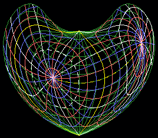

Loading...
Searching...
No Matches
WCSLIB 8.10 and PGSBOX 8.10

Bonne's projection
Contents
- Introduction
- FITS-WCS and related software
- Overview of WCSLIB
- WCSLIB data structures
- Memory management
- Diagnostic output
- Vector API
- Thread-safety
- Limits
- Example code, testing and verification
- WCSLIB Fortran wrappers
- PGSBOX
- WCSLIB version numbers
Copyright
WCSLIB 8.10 - an implementation of the FITS WCS standard. Copyright (C) 1995-2026, Mark Calabretta WCSLIB is free software: you can redistribute it and/or modify it under the terms of the GNU Lesser General Public License as published by the Free Software Foundation, either version 3 of the License, or (at your option) any later version. WCSLIB is distributed in the hope that it will be useful, but WITHOUT ANY WARRANTY; without even the implied warranty of MERCHANTABILITY or FITNESS FOR A PARTICULAR PURPOSE. See the GNU Lesser General Public License for more details. You should have received a copy of the GNU Lesser General Public License along with WCSLIB. If not, see http://www.gnu.org/licenses. Direct correspondence concerning WCSLIB to mark@calabretta.id.au Author: Mark Calabretta, Australia Telescope National Facility, CSIRO. http://www.atnf.csiro.au/computing/software/wcs $Id: mainpage.dox,v 8.10 2026/09/27 05:44:34 mcalabre Exp $
Generated on for WCSLIB by